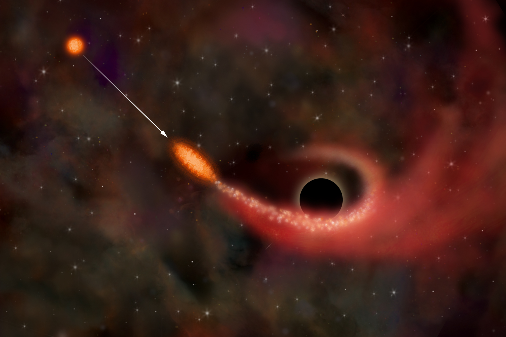

Secular Dynamics around
a Massive Black Hole
Ben Bar-Or
The Institute for Advanced Study
With Tal Alexander (WIS), Jean-Baptiste Fouvry (IAS)
and Pierre-Henri Chavanis (Toulouse)
The Galactic center is a rich environment
- Extremely dense stellar system
- We can observe individual stars
- Observations indicate a Massive Black Hole \(M=4\times10^{6}M_{\mathrm{sun}}\)
- A “lab” for testing general relativity
- Most of the stellar objects are unobservable
- Opportunity for studying statistical physics of a stellar system

Schödel et al. (2007)
The S-stars cluster

Tidal disruption

Extreme mass ratio inspiral
Steve Drasco & Curt Cutler
\(N\)-body simulation (\(N=10^4\, t = 10^5 \mathrm{yr}\))
Bar-Or et al. (2013)
\(N\)-body simulations are demanding
- Large number of stars: \(N\sim M_{\bullet}/m_{\star}\)
- Must include:
- Direct \(N\) body summation (no-softening)
- Post-Newtonian terms up to 2.5 PN order. (Includes precession and gravitational wave emission)
- Large dynamical range:
- Crossing time: \(t_{\mathrm{cross}}=R/\sigma\)
- Relaxation time: \(t_{r}\approx0.34\sigma^{3}/\left(nG^{2}m_{\star}^{2}\log\Lambda\right)\)
- Velocity dispersion: \(\sigma\sim\sqrt{GM_{\bullet}/R}\)
(Douglas Heggie)
\[t_{r}/t_{\mathrm{cross}} \sim \left(\frac{M_{\bullet}}{m_{\star}}\right)^{3/2}/\log\Lambda\]
Replacing the kinetics with stochastics
“Lies, damned lies, and statistics”
- Advantages
- Can describe large (realistic) systems
- Can disentangle the different physical processes
- Can lead to analytic description
- Limitations
- Assumes we understand the physics
- Assumes the stochastic theory is reliable
- No "new" physics
-
Alternatives: Effective \(N\)-body simulations
(see Madigan et al. (2011); Hamers et al. (2014); Kocsis and Tremaine (2015); Fouvry, Bar-Or and Chavanis (2018))
Statistical mechanics of stellar systems is challenging
Commonly used Approximations:
- Local interactions
- Instantaneous interactions: Markovian (uncorrelated) process
- Weak encounters: central limit
Fokker-Plank equation
$$\frac{\partial P(\mathbf{v},t)}{\partial t} = \underset{\color{magenta}{\mathrm{diffuson}}}{\underbrace{\frac{1}{2}\frac{\partial }{\partial v_i} \big[D_{ij} \frac{ \partial P(\mathbf{v}, t)}{\partial v_j}\big]}} - \underset{\color{magenta}{\mathrm{dinamical\,\, friction}}}{\underbrace{\frac{\partial }{\partial v_i} \big[D_{i}^{\mathrm{f}} P(\mathbf{v}, t)\big]}} $$
- Random walk in velocities (energy and angular momentum)
- Slow relaxation \(t_{\mathrm{relax}} \sim 10^{10}\,\mathrm{yr}\)
Landau equation
Collision kernel: $$ u_{ij}(\mathbf{w}) = \int \mathrm{d} \hat{\mathbf{k}} \hat{k}_i \hat{k}_j \Delta (\hat{\mathbf{k}}\cdot \mathbf{w}) = \pi \frac{w^2 \Delta _{ij} - w_i w_j}{w^3} $$
\(2\)-body energy propagation: Fokker-Planck
- Master Equation
\(\frac{\partial}{\partial t}W_{E,J}(\Delta E,t)=\) \(\int d\epsilon K_{E,J}(\epsilon)\left\{ W_{E,J}(\Delta E-\epsilon,t)-W_{E,J}(\Delta E,t)\right\}\)
- Jump probability \(K_{E,J}\left(\epsilon\right)\)
- The Fokker-Planck assumption
(Taylor expansion up to second order in \(\epsilon\)) \(\frac{\partial}{\partial t}W_{E,J}(\Delta E,t)=\) \(\frac{1}{2}\frac{\partial^{2}}{\partial\Delta E^{2}} \left\langle \epsilon^{2}\right\rangle W_{E,J}(\Delta E,t) -\frac{\partial}{\partial\Delta E}\left\langle \epsilon\right\rangle W_{E,J}(\Delta E,t)\)
- Diffusion coefficients: \(\left\langle \epsilon^{2}\right\rangle ,\left\langle \epsilon\right\rangle \propto\log\Lambda\)
- Solution for a delta function at \(t=0\) (i.e. Propagator)
\[\color{green}{W_{E,J}^{\mathrm{FP}}(\Delta E,t)=\frac{1}{\sqrt{2\pi\sigma^{2}}}e^{-\frac{\Delta E{}^{2}}{2\sigma^{2}}}}\] Normal diffusion: \(\color{yellow}{\sigma\propto\sqrt{t\log\Lambda}}\)
\[\color{green}{W_{E,J}^{\mathrm{FP}}(\Delta E,t)=\frac{1}{\sqrt{2\pi\sigma^{2}}}e^{-\frac{\Delta E{}^{2}}{2\sigma^{2}}}}\] Normal diffusion: \(\color{yellow}{\sigma\propto\sqrt{t\log\Lambda}}\)
\(2\)-body energy propagation: Heavy Tail
-
Master Equation
\(\frac{\partial}{\partial t}W_{E,J}(\Delta E,t)=\) \(\int d\epsilon K_{E,J}(\epsilon)\left\{ W_{E,J}(\Delta E-\epsilon,t)-W_{E,J}(\Delta E,t)\right\}\)
- Heavy tailed Jump probability \(K_{E,J}(\Delta E)\propto\left|\Delta E\right|^{-3}\) (Goodman 1983)
-
Fourier transform:
\(\frac{\partial}{\partial t}\tilde{W}_{E,J}(k,t)=\) \(-\tilde{K}_{E,J}(k)\tilde{W}_{E,J}(k,t)+\tilde{K}_{E,J}(0)\tilde{W}_{E,J}(k,t)\)
- Propagator: \(W_{E,J}(\Delta E,t)=\int_{-\infty}^{\infty}\frac{dk}{2\pi}e^{ik\Delta E}e^{\left(\tilde{K}_{E,J}(k)-\tilde{K}_{E,J}(0)\right)t}\)
\[\color{red}{W_{E,J}(\Delta E,t)}=\color{blue}{\frac{1}{\sqrt{2\pi\sigma^{2}}} e^{-\frac{\Delta E^{2}}{2\sigma^{2}}}} + \mathrm{\color{red}{Heavy\,Tail}}\] Anomalous diffusion: \(\color{yellow}{\sigma\propto\sqrt{t\log(t\Lambda/t_E)}}\)
Anomalous diffusion
Anomalous diffusion:
\(\color{yellow}{\sigma^{2}\sim
t\log\left(\Lambda t/t_{E}\right)}\)
Normal diffusion: \(\sigma^{2}\sim t\log\left(\Lambda\right)\)
Measuring \(2\)-body relaxation
\[\sigma_{\Delta E/E}^{2}=\lim_{\delta\to0}\frac{\langle|\Delta E/E|^{\delta}\rangle^{2/\delta}}{2\pi^{-1/\delta}\Gamma\left(\frac{1+\delta}{2}\right)^{2/\delta}}\]
Long-time correlations are important
Resonant Relaxation (Rauch & Tremaine 1996):
- Stochastic residual torques \(\dot{J} \propto\sqrt{N}\)
-
Short timescales (\(P < t < T_\mathrm{coh}\)):
angular momentum changes coherently -
Longer timescales (\(t > T_\mathrm{coh}\)):
random walk in angular momentum - Relaxation can be fast: \(T_{RR} \ll T_{\mathrm{relax}}\)

\(N\)-body simulation (\(N=10^4\, t = 10^5 \mathrm{yr}\))
Bar-Or et al. (2013)
\(N\)-body simulation (\(N=10^4\, t = 10^5 \mathrm{yr}\))
Bar-Or et al. (2013)
\(N\)-body simulation (\(N=10^4\, t = 10^5 \mathrm{yr}\))
Bar-Or et al. (2013)
Key question: How to describe resonant relaxation?
Challenges:
- Long range interactions
- Long time correlations
- Multiple timescales: correlated process
Description by a diffusion equation?
\(N\)-body simulation (\(N=10^4,\, t = 10^5 \mathrm{yr}\))
Bar-Or et al. (2013)
Kinetic theory
- Orbit Averaged potential: \[U\left(a,e,\theta,\phi,\psi,\color{yellow}{t}\right)=\sum_{k=1}^{N}\int\frac{dw}{2\pi}\int\frac{dw_{k}}{2\pi}\frac{GM_{\star}}{\left|\mathbf{r}-\color{yellow}{\mathbf{r}_{k}\left(t\right)}\right|}\]
- Potential expansion: \[U\left(a,e,\theta,\phi,\psi,t\right)=\sum_{l=0}^{\infty}\sum_{m=-l}^{l}\sum_{n=-l}^{l}D_{nm}^{l}\left(\psi,\theta,\phi\right)\color{yellow}{\eta_{nm}^{l}\left(a,e,t\right)}\]
- Relativistic (\(l=1\)) Hamiltonian: \[H_{\eta}=-j\nu_{GR}\left(j\right)J_{c}+\tau_{N}(j)\hat{e}_{\psi}(\phi,\theta,\psi)\cdot\color{yellow}{\boldsymbol{\eta}\left(t\right)}\]
- Stochastic Equations of motion: \[\dot{\boldsymbol{J}}=-\tau_{N}\left(J\right)\hat{e}_{\psi}\left(\phi,\theta,\psi\right)\times\color{yellow}{\boldsymbol{\eta}\left(t\right)}\] \[\dot{\psi}=\nu_{GR}\left(j\right)+\frac{\tau_{N}\left(J\right)}{J}\left[\frac{\partial\log\tau_{N}\left(J\right)}{\partial\log J}\hat{e}_{\psi}\left(\phi,\theta,\psi\right)-\frac{J_{z}\cos\psi}{\sqrt{J^{2}-J_{z}^{2}}}\hat{e}_{J}\left(\phi,\theta,\psi\right)\right]\cdot\color{yellow}{\boldsymbol{\eta}\left(t\right)}\]
The Stochastic approach
- Stochastic Equations of motion: \[\dot{\boldsymbol{J}}=-\tau_N(J)\hat{e}_\psi(\phi,\theta,\psi)\times\color{yellow}{\boldsymbol{\eta}(t)}\] \[\dot{\psi}=\nu_{GR}(j)+[\dots]\cdot\color{yellow}{\boldsymbol{\eta}(t)}\]
- Torque magnitude: \(\tau_{N}\propto(\sqrt{N(a)}/Q)J_{c}\)
- Markovian approximation - uncorrelated noise: \[\left\langle \eta_{i}(t)\eta_j(t^\prime)\right\rangle =\delta_{ij}\delta((t-t^\prime)/T_\mathrm{coh})\]
\(N\)-ring simulation
Resonant relaxation can be
extremely efficient
- Random walk in phase space
- Much faster than \(2\)-body relaxation
- All stars will plunge into the massive black hole
- General relativity is not included

 Monte Carlo simulations: \(2\)-body only
Monte Carlo simulations: \(2\)-body only
(Bar-Or and Alexander, 2016)
 Monte Carlo simulations: with resonant relaxation
Monte Carlo simulations: with resonant relaxation
(Bar-Or and Alexander, 2016)
Relativistic stars precess fast
- Precession frequency diverges with eccentricity \[\color{yellow}{\nu_{GR}(j)}=3\frac{J_c^2}{J^{2}}\frac{r_{g}}{a}\nu_{r}\left(a\right)\]

S2

Ghez et al. (2008), Gillessen et al. (2009)
\[T_{GR}\approx2\times10^{3}P\]
General relativistic effects restrict the relaxation
- Restricted random walk in phase space
- Protection against direct plunges
(Hopman & Alexander 2006)
- Emission of gravitational waves
- Demonstrated in \(N\)-body simulations
(Merritt et al. 2011, Brem et al. 2014)
 Post-Newtonian \(N\)-body simulation (\(N=50\))
Post-Newtonian \(N\)-body simulation (\(N=50\))
Kupi and Alexander (2012)
Key question: How to describe
relativistic resonant relaxation?
Challenges:
- Long range interactions ✔
- Long time correlations
- Multiple timescales: correlated process
- Non-relativistic orbits: \(2\pi/\nu_{GR} \gg T_\mathrm{coh}\)
- Relativistic orbits: \(2\pi/\nu_{GR} \ll T_\mathrm{coh}\)
Description by a diffusion equation?
Relativistic precession
Precession frequency diverges with eccentricity \[\color{yellow}{\nu_{GR}(j)}=3\frac{J_c^2}{J^{2}}\frac{r_{g}}{a}\nu_{r}\left(a\right)\]
Stochastic equations of motion with correlated noise
- Stochastic Equations of motion: \[\dot{\boldsymbol{J}}=-\tau_N(J)\hat{e}_\psi(\phi,\theta,\psi)\times\color{yellow}{\boldsymbol{\eta}(t)}\]
- Correlated noise: \[\left\langle \eta_{i}(t)\eta_j(t^\prime)\right\rangle =\delta_{ij}C((t-t^\prime)/T_\mathrm{coh})\]
Noise models
Power spectrum

Bar-Or and Alexander (2014)
Resonant relaxation can be described by an effective diffusion equation
- The \(\mathbf{\eta}\)-formalism: Stellar background as correlated noise \[\dot{\boldsymbol{J}}=-\tau_N(J)\hat{e}_\psi(\phi,\theta,\psi)\times\color{yellow}{\boldsymbol{\eta}(t)}\]
- Effective Fokker-Planck (diffusion) equation
- Noise dependent diffusion coefficient: \[ D_2(j) \propto\color{yellow}{{S_\eta}{\color{yellow}(\nu_{GR}(j))}}\] Proportional to the spectral power of the noise at the precession frequency.
- GR Precession frequency diverges with eccentricity \[\color{yellow}{\nu_{GR}(j)}\propto 1/j^{2}\]
Power spectrum
Bar-Or and Alexander (2014)
-
Adiabatic invariance \(\nu_{GR}(j) =
2\pi/T_{\mathrm{coh}}\)
Scalar Resonant Relaxation
Fokker Plank Equation
$$ \frac{\partial P(J, t; a)}{\partial t} = \frac{1}{2}\frac{\partial}{\partial J} \bigg[J D_{JJ}^\mathrm{RR}(a, J) \frac{\partial}{\partial J} \frac{P(J,t; a)}{J} \bigg] $$ $$ - \color{magenta}{\frac{\partial}{\partial J} \bigg[D_{J, \mathrm{friction}}^\mathrm{RR}(a, J) P(J,t; a) \bigg]} $$
Diffusion coefficient
\( D_{JJ}^\mathrm{RR}(a, J) = \) $$ 4 \pi G^2 \sum_i m_i^2 \sum_{n, n'} n^2 \int da' dJ' f(a',J')|A_{nn'}|^2 $$ $$ \quad \quad \quad \quad \times \color{yellow}{\delta (n \nu_p(a,J) - n' \nu_p(a',J'))} $$
"Dynamical friction"
\( \color{magenta}{D_{J, \mathrm{friction}}^\mathrm{RR}(a, J)} = \) $$ 4 \pi G^2 \sum_i m_i^2 \sum_{n,n'} n n' \int da' dJ' J' \color{magenta}{\partial_J' \big[f(a',J')/J'\big]}|A_{nn'}|^2 $$ $$ \quad \quad \quad \quad \times \color{yellow}{\delta (n \nu_p(a,J) - n' \nu_p(a',J'))} $$
Relativistic orbits are driven by
\(2\)-body relaxation
Monte-Carlo simulation (Bar-Or and Alexander 2016)
(See \(N\)-body simulations in Merritt et al. 2011)
Monte-Carlo simulation (Bar-Or and Alexander 2016)
(See \(N\)-body simulations in Merritt et al. 2011)
Bar-Or and Fouvry (2018)
Timescales
Bar-Or and Fouvry (2018)
Bar-Or and Fouvry (2018)
Vector Resonant Relaxation
Equation of motion
$$ \frac{\partial \mathbf{L}}{\partial t} = \frac{\partial }{\partial \mathbf{L}}\!\! \times \! (H \mathbf{L}) = M_{\ell k}(t) X_{\ell k}(\mathbf{L}) $$
- Magnetization \( M_{\ell k}(t) = \sum_{i}^{N} A_{\ell} Y_{\ell k}(\hat{\mathbf{L}}_i(t))\)
- \( X_{\ell k} =\mathbf{L} \!\! \times \! \frac{\partial Y}{\partial \mathbf{L}} \)
Statistical Description
- Typical torques \(\Gamma \sim \sqrt{\langle \dot{\mathbf{L}}\cdot \dot{\mathbf{L}} \rangle }\)
- Coherence time \(T_\mathrm{c} \propto L_\mathrm{c}/\Gamma\)
Effective description
$$ \frac{\partial \mathbf{L}}{\partial t} = \Gamma \, \eta(t)\times\hat{\mathbf{L}} $$ Correlated noise \( \langle \eta_i(t) \eta_j(t') \rangle = \delta_{ij} e^{-(t-t')^2/T_\mathrm{c}^2} \)
Vector Resonant Relaxation can enhance
Eccentric Binary black hole Mergers
-
Binary orbit driven by Lidov-Kozai oscillations
$$ t_\mathrm{LK} \sim \frac{P_\mathrm{out}^2}{P_\mathrm{in}} (1-e^2_\mathrm{out})^{3/2} $$
-
Outer orbit diriven by VRR
$$ t_\mathrm{VRR} \sim \frac{P_\mathrm{out}}{N_\star} \frac{M_\bullet}{m_\star} $$
- Maximal enchantment when \(t_\mathrm{LK} \sim t_\mathrm{VRR}\)